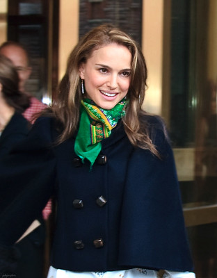

Natalie Portman

Who is Natalie Portman?
Natalie Portman was born in Israel, but moved to Long Island, NY at a young age. She was discovered in a local pizza restaurant by a cosmetic-brand agent, who wanted Portman (then, age 11) to start modeling for their company. Even though this was her big break, she didn't model for long. Portman switched to acting, as that was more interesting to her. Her first movie was The Professional, released in 1994. Her career took off from there, and Portman consistently landed movie roles. Her first Oscar, won in 2010, was for her role in Black Swan. She was born on June 9th.
Gossip & Recent Scandals
In 2018, Portman starred in Annihilation, a sci-fi film based off of a book series, but she
was accused of whitewashing because the main character of the book is of Asian descent.
However, this isn't revealed until the sequel, and so Portman insisted she didn't know.
She released a statement calling for better P.O.C. representation.
In March 2024, Portman finalized a divorce from her husband of 11 years.
This was done extremely quietly, although it was already known that her husband had an affair.
In June 2023, an article is published revealing the affair. The report also broke the
news that Portman and husband had been separated for some time. But, reconciliation
was expected. Obviously, that didn't happen, or it wasn't enough to save the marriage.
You can find a complete timeline here on Cosmo:
NP + husband's relationship timeline.
There you can see all the quotes from close sources to Portman, but generally,
she keeps her private life private. Most of her friends aren't famous. Sad face.
Harper's Bazaar "How I Got Here" Interview–Natalie Portman
Below is a tweet detailing Portman's new projects:
Natalie Portman upcoming projects:
— Natalie Portman Updates (@nportmanonline) February 21, 2024
• Lady in the Lake (TV Limited Series) dir. Alma Har’el
• The Twits (Animation) dir. Phil Johnston
• Fountain of Youth dir. Guy Ritchie pic.twitter.com/lJP5Jjyu9Q
This page has been designed by: Lillian Parrotta, lrparr